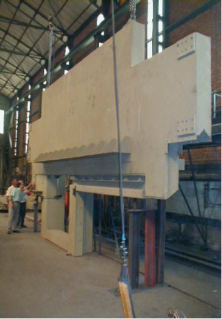
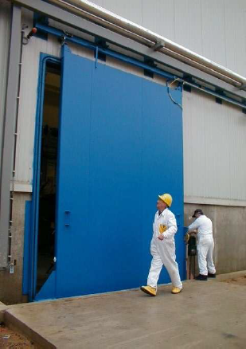

VANDERPLANCK Door Engineering is specialized in design and production of high-tech metal doors & derivatives for special applications such as :
- Explosion protection doors
- Fire Rated doors
- Nuclear heavy doors
- Gas and liquid-tight doors
- Customized doors
- Fire rated louvers, dampers & sleeves
The highly specialized drawing office of Vanderplanck Door Engineering can also make its analysis available to designers from the conception of any project.
With the help of the latest simulation and calculation technologies, Vanderplanck’s engineers guarantee an absolute match of the presented products on offer for each project.
With more that 1.500.000 doors fabricated and placed since 1912, Vanderplanck is a world leaders in the market of tailor made doors.
HIGH-TECH METAL DOORS for Special Applications


Contact Person
Mr Fernando Quesada
email: fernando@vdpm.be
tel: +32 64 52 10 30
fax: +32 64 52 10 40
http://www.vanderplanck.com
Rue Cense de la Motte, 49
B - 7170 Bois d’Haine
Belgium
Contact Person
Mr Fernando Quesada
email: fernando@vdpm.be
tel: +32 64 52 10 30
fax: +32 64 52 10 40
http://www.vanderplanck.com
Rue Cense de la Motte, 49
B - 7170 Bois d’Haine
Belgium